“分数大小的比较”教学设想 [1]
分数大小的比较，是学生在第七册已初步学习过一些简单分数大小的比较的基础上学习的，但那时只限于看图比较同分母分数的大小和分子是1的异分母分数的大小。这里要进一步学习分数大小的比较，通过比较，进一步加深对分数意义的理解。为了营造良好的学习氛围，积极引导学生组建认知结构，本节课的教学设想是：
一、基础训练，唤起原认知
分数大小比较的算理基于分数的意义和分数单位的概念之上，通过基础训练4道题的复习，唤起学生的原认知，为“同化”“顺应”新知准备知识基础和思维导向。这一教学过程，虽不属新授知识的正题，但它是认知思维的起点和依据，是形成新知结构的根基。
二、导入新课，形成认知定向
基础训练后，寥寥数语揭示教学目标，形成认知定向。
三、进行新课，内化新知，初步发展学生的认知结构
新课分三段进行。
（1）教学例3。先通过看图，让学生比较
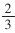
和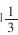
的大小，学生很容易得出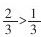
。再启发学生说说为什么？有两种说法：一种是把图形三角形（单位“1”）平均分成3份，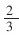
是取了2份，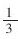
是取了1份，因为2份比1份多，所以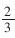
就大于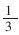
；另一种说法是因为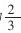
是2个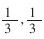
是1个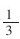
，2个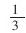
比1个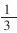
大，所以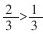
。在此基础上再比较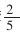
和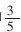
的大小，因为有前面的思维导向，学生就很容易叙述出算理。最后启发学生想：这两组分数有什么共同的地方？（每组中两个分数的分母相同，也就是分数单位相同）进而提出，在这种情况下根据什么判断分数的大小？引导学生说出要看分子，分子大的表示取的份数多（也就是包含的分数单位多），所以分母相同的分数，分子大的分数比较大。然后进行练习，并让学生说出判断的思考过程。练习之后让学生类推出分母相同的三个分数大小的比较。（2）教学例4。例4是教学的难点，为突破难点，在教例4之前，先安排了一道应用题（也可按照班级人数的具体情况灵活处理），通过平均分的组数与每组人数的关系，为学生理解分子相同的两个分数，分母小的分数比较大的算理做铺垫。在比较
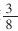
和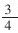
这两个分数的大小之前，安排了比较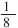
和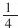
的大小，并说一说为什么？减缓了学生理解分子不是1的同分子分数大小比较算理的坡度，利于学生推理。（3）练习。根据图意填空，然后完整地说出分母相同或分子相同的分数大小比较的方法，加深记忆。
四、反馈练习，巩固和完善认知结构
完善的认知结构，应是网络状的，牢不可破的整体结构。安排有层次、有梯度习题的练习，旨在引导学生捕捉有内在逻辑联系的内容作为一种信息，激发学生在原有的认知结构上从广度和深度上去进一步探索，完善认知结构。前3题是练习十六中的习题，其中第2题中的
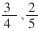
和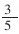
的大小比较是难点。先让学生尝试，然后说出比较的方法，明确解难的途径。游戏——找朋友，既是活跃课堂气氛，又是把练习推向高潮。这时，已变成4个分数的比较以至5个分数的比较。第4题，先求出下面每组中两个除式的商，再比较它们的大小，将旧知纳入新知轨道。第5题，发散思维练习，学生解题方法活了，思维结构也相应得到巩固和发展，形成了整体的认知结构。
五、课堂小结是对课堂教学效率的肯定，又是对今后继续学习的激励
通过同化、顺应使新知结构不断地成为进一步学习的原认知（基础），学生就会以所学知识为原认知，继续探索，组建新的认知结构——异分母分数大小的比较。